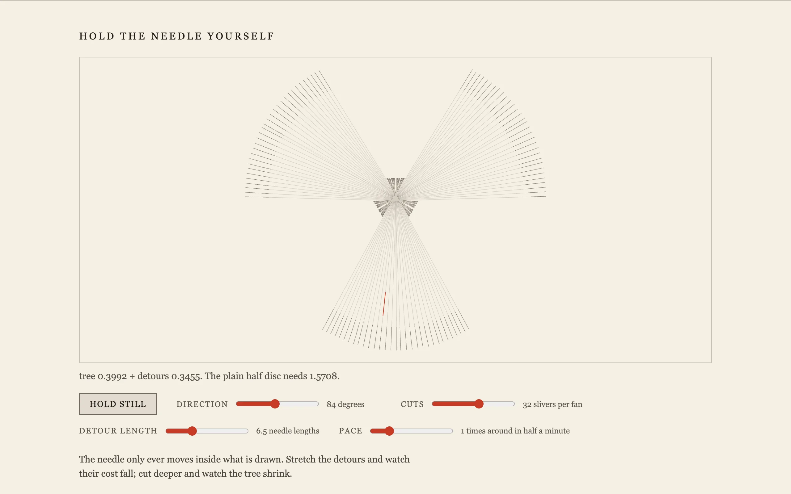

In 1917 Soichi Kakeya asked how little area you need to turn a unit needle all the way around in the plane, so that it ends up pointing the opposite way. Swing it about one end and it sweeps a half disc, \(\pi/2 \approx 1.5708\). Kakeya's guess was the deltoid, the three-cusped curve traced by a point on a circle rolling inside one three times its size. A needle of length \(4r\) fits inside it with both ends on the curve and turns fully around while staying tangent. Its area is \(2\pi r^2\), which for a unit needle is \(\pi/8 \approx 0.3927\), a quarter of the half disc.
In 1928 Besicovitch showed there is no least area at all. Cut a triangle into slivers, slide them into each other, and the needle can still turn through every direction the triangle covered, in as little room as you like. Perron simplified the construction the same year, and the trick for carrying the needle between slivers is due to Pál (Math. Ann. 83, 1921). I wanted a page that shows this rather than describes it, and I wanted every picture on the page to be a computation, with the needle following a program that cannot draw a position outside the set even by accident.
Sliding slivers
Start with an equilateral triangle of height 1, apex up. Its base is \(2/\sqrt{3}\) and its area \(1/\sqrt{3} \approx 0.5774\). The apex sees the base through 60 degrees, so a needle pivoting about the apex turns through 60 degrees of directions inside it. Cut it from the apex into \(2^k\) slivers. Each sliver is a thin triangle carrying its own range of directions, and a unit needle still turns about its apex inside it, which is why the code refuses an apex below height 1.
Now slide the slivers horizontally so they overlap. The scheme, in the form Falconer presents it, works on the base intervals alone. Pair adjacent groups. Each group carries a heart, a similar triangle scaled by a factor \(\alpha\) between one half and one, and the right group of the pair moves left so the two hearts sit side by side as halves of one parent triangle, then pulls back by \((1 - \alpha)\) times that parent's base. Only the right member of each pair ever moves, and the heart width grows by \(2\alpha\) at each stage. One stage takes a union of area \(A\) to \((3\alpha^2 - 4\alpha + 2)A\), and after \(k\) stages the union over the original triangle is at most
\[ \alpha^{2k} + \frac{2(1-\alpha)^2 (1 - \alpha^{2k})}{1 - \alpha^2}. \]The depth-1 identity is asserted in the tests by measuring the union for \(\alpha\) of 0.6, 0.75 and 0.9, and the bound is asserted at depths 2 to 5. In the repo the bound appears twice, once as Chang's closed form and once as Falconer's guaranteed-savings bound \(1 - (3\alpha - 1)(1 - \alpha^{2k})/(1 + \alpha)\), and the test suite checks both. They are the same expression rearranged, so what the tests really establish is one bound, checked from above at every depth and, in the table test, from below: the measured area has to land within 80 percent of it, which is what confirms the translations went where they should.
Measuring area twice
The numbers on the page come from a generated table, and a number only makes it into the table if two independent methods agree on it. The first is exact polygon clipping using a Martinez union, merged pairwise in a tree because a single union of hundreds of overlapping slivers ran out of memory. The second is grid sampling: count cells whose centre lies in some sliver, at cells of 0.003 and again at 0.0015, and the two grids have to agree within 0.02 before either counts. Then the clipped area and the grid area have to agree within 0.02, or the script throws and writes nothing. For each depth the overlap \(\alpha\) is chosen by a coarse grid over 0.55 to 0.9, keeping whichever gave the smallest union.
At depth 1 the best \(\alpha\) is 0.65 and one fan covers 0.3854. At depth 9 it is 0.85 and one fan covers 0.1186. The full figure is three fans, rotated by 0, 120 and 240 degrees about the centroid of the heart triangle so the three hearts coincide, and its area falls from 0.6668 at depth 1 to 0.2939 at depth 9. The site's counter reads the same table. My README still quotes an older run, 0.960 down to 0.356 for the three fans, and I have not fixed it.
Detours
Turning inside a sliver is fine, but the slivers have been slid apart, so the needle has to get from the apex of one to the apex of the next along a parallel line some distance \(d\) away. Pál's move is to slide far out along the needle's own line, a distance \(N\), tilt by a small angle \(\sigma\) toward the target line, slide across, and tilt back. The only area swept is two circular sectors of radius 1 and angle \(\sigma\), so the cost is exactly \(\sigma\), and \(\sigma\) is about \(d/N\). Double the detour and the cost halves. The tests check that, and check that at depth 2 a detour of 1,000 needle lengths brings the whole figure's join budget under 0.003.
The sweep chains all \(3 \cdot 2^k\) slivers with a join between each consecutive pair, the middle fan traversed with the needle reversed since directions only matter mod 180 degrees, and the total turn comes out to \(\pi\) to twelve decimal places. With detours of 100 needle lengths the joins cost between 0.012 and 0.025 over the whole sweep, depending on depth. Tree plus joins first undercuts the deltoid at depth 7, where it comes to 0.3311. On the page the detours are drawn short so they stay in frame, which is why the screenshot shows them costing more than the tree does. The playground slider stretches them to 100 and the cost falls accordingly.
The needle as a program
Every needle on the page is a unit segment evaluated from a program made of two primitives, a slide along its own line and a turn about a pivot, at some arc length along the program. Nothing else can move it. So the question of whether the animation ever cheats reduces to whether the program stays in the set, and that I test by sampling. At 1,500 instants across the whole sweep, the needle is sampled every 0.02 of its length and each point has to lie inside some sliver, some join sector, or a strip of half-width 0.002 around one of the travel lines. That is a sampled check with a tolerance, not a proof, and I want to be clear about that. Property-based tests cover the rest: random programs of up to 30 moves preserve the needle's length to 1e-9, evaluation is continuous in the parameter, and a flood fill over the drawn set at depth 3 reaches every filled cell, so the figure is one piece.
The story on the page ends by pointing at the 2025 result of Wang and Zahl. That is a different problem, and the page should keep them apart better than it does. The needle problem is about area and was settled in the plane by 1928. The Kakeya set conjecture is about the Hausdorff dimension of sets containing a unit segment in every direction, and what Wang and Zahl proved is that in three dimensions such a set has dimension 3.